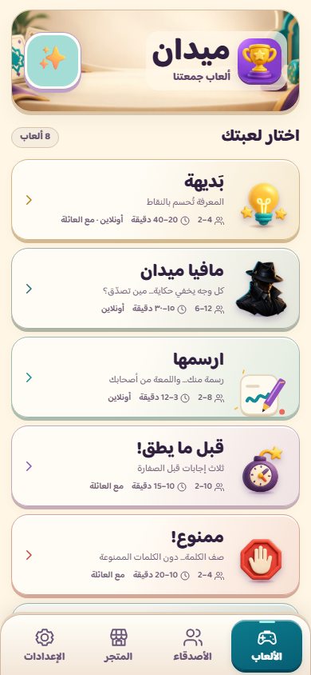
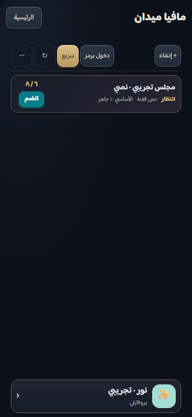
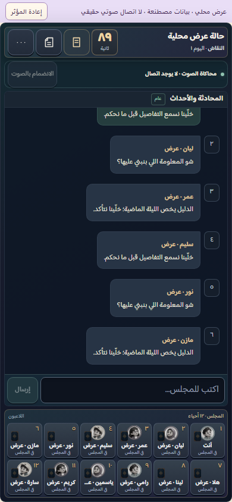
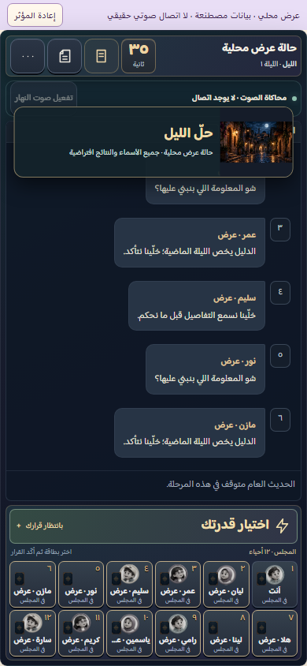

اكتمل التنفيذ المحلي: 2005 اختبارات ناجحة، صفر إخفاق، وفحص Chromium وWebKit والغرف الفعلية المعزولة. المعاينة على الكمبيوتر فقط؛ لا نشر ولا اختبار آيفون فعلي.
فتح صفحة المراجعة التفاعلية · يعمل الرابط على هذا الكمبيوتر فقط.
الرئيسية بثمانية صفوف أفقية، خلفية ثلاثية الأبعاد أصلية، اختيار النمط والتعليمات المختصرة، خمسة أدلة غرف بهيكل واحد وبروفايل سفلي، وغلاف مافيا مكثّف للمحادثات والسجل والأفعال واللاعبين والمؤثرات. بقيت القواعد والنتائج والجلسات محفوظة.
| اللعبة | أونلاين | مع العائلة |
|---|---|---|
| بديهة | نعم | نعم |
| مافيا | نعم | غير مدعوم |
| ارسمها | نعم | غير مدعوم حاليًا |
| قبل ما يطق! | غير مدعوم | نعم |
| ممنوع! | غير مدعوم | نعم |
| على جبينك | غير مدعوم | نعم |
| فبركة | نعم | نعم |
| مين فينا | نعم | نعم |




لم أنفذ رفعًا أو دمجًا أو نشرًا أو ترحيلًا بعيدًا أو تغييرًا للرابط الحالي. تبقى الموافقة على هذه المعاينة منفصلة عن أي إذن بالنشر.
سجل التحقق · قائمة المتطلبات التسعة عشر · إثبات الخادم والمتصفحات
2026-10-30T14:47:38.860Z · codex/local-ui-rebuild-20261030 · الأساس 6f1cf5cd2b26b69810e139185c625999eff51f40